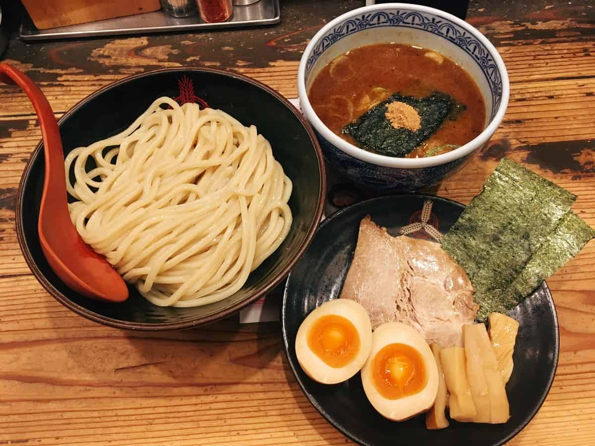

Ramen

Description
A tantilizing bowl of tsukemen ramen. Learn to make it and watch all of your problems melt away! Yum!
Ingredients
- Ramen noodles
- Tsukemen broth (don't forget the garlic!)
- Chashu pork
- Marinated egg
- Bamboo shoots
- Seaweed wrap
- Corn kernels
- Other toppings according to preference
Steps
- The night before, hard boil your desired number of eggs and leave them to soak overnight in a marinade
- Make broth, bring to boil
- A few minutes before the broth is ready, boil the noodles in a separate pot. They should be al dente
- Transfer noodles and broth to bowls (keeping separate)
- Add toppings to broth
- Enjoy!